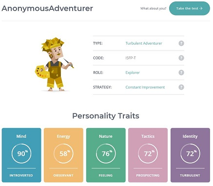

16 Personalities Test

(Introduction | Adventurer (ISFP) Personality | 16Personalities, 2020)
The 16 Personality Test suggests that an Introverted Turbulent Adventurer (ISFP-T) is an individual who portrays introverted, observant, feeling, prospecting, and turbulent behavioural traits. It is an informative, albeit general, insight into my personality.
Strengths
Introverts are not always recluses; I thrive when I am surrounded by like-minded individuals with a common goal. When the work is delegated in a team, I enjoy the balance between space to work independently and group activities. Issues arise when there is a lack of planning and delegation, in these instances, I actively focus on resolving issues as they arise.
My concern for others and the goals set encourages me to maintain communication with my teammates. Observance is a characteristic that also describes me well and can be mistaken for an unwillingness to communicate. I often sit back and observe discussions before I form an opinion and contribute; this position allows me to assess and address risks better. Communicating effectively and with purpose is imperative when working in a team situation. Conflicts may arise when communication tools are not used appropriately, and I believe that by setting a standard for professional communication we can avoid and resolve any issues.
Listening to and understanding all team members’ ideas is important when planning a project. Identifying the strengths and capabilities of all members will allow a team to plan and delegate accordingly. This allows us to make achievable goals and “Turbulent” personalities, such as myself, are compelled to apply these strengths to realise the most successful outcome.
I am pragmatic in my approach to tasks and work well with short term goals. This approach enables me to be flexible when challenges arise, hence my “prospecting” behavioural trait.
I show concern for the welfare of others by encouraging inclusivity and even distribution of responsibility. Individuals led by their “feelings” are not incapable of rational thinking. Teams are sometimes faced with ethical issues and I am inclined to apply empathy through mediation to help resolve conflicts.
Weaknesses
I prefer low-stress settings and I can be overwhelmed by unresolved conflicts and incomplete actions. When I am faced with a conflict, I often fixate on its resolve rather than work around it. In this sense, social interaction can be exhausting for me and affect my ability to work efficiently. I find that bonding as a team and building a sense of community can encourage all team members to invest in the team and project.
When I choose to observe and make informed contributions, I inadvertently put pressure on myself to produce near-perfect work; this is time-consuming and exhausting. This affects my focus on the long-term goal, as I tend to focus on short-term goals. This can often cause confusion and a lack of cohesion in the project, for this reason, I suggest that team meetings are held at regular intervals to maintain focus. This is my incentive for emphasis on clear and concise planning and delegation in an open group forum.
I aim to please all members of the group by listening intently and validating all contributions and inadvertently seek validation for my contributions. I consider the emotions of my teammates and this can affect my ability to reject ideas in fear of upsetting individuals and can be unnecessarily critical of my work. Communication plays an important role in balancing this, by opening the platform and encouraging group discussions, we share the responsibility for making decisions.
The Big 5 personality test
Below are my results from the Big 5 personality test, these are like behavioural categories described in the 16 Personalities Test. In a team setting my strengths as described by this personality test is my ability to interact well with others and my tendency to opt for realistic goals.
- Factor I – Extroversion 33%
- Factor II – Emotional Stability 22%
- Factor III – Agreeableness 83%
- Factor IV - Conscientiousness 41%
- Factor V – Intellect / Imagination 46%
(Big Five Personality Test, 2020)
The learning Styles quiz (EMTRAIN AU)
According to the Learning Styles quiz, my approach to learning and style order is as follows, pragmatist, theorist, reflectors, and activist. Having the pragmatists and theorists as my primary and secondary learning styles suggests that I like to visualise the goal and thinking logically about how to achieve it. This approach may benefit a team’s momentum by encouraging clear and concise plans and preventing any future conflicts.
- Primary Learning Style - Pragmatists
- Secondary Learning Style - Theorists
- Tertiary Learning Style - Reflectors
- Quarternary Learning Style - Activists
(Learning Styles Quiz, 2020)